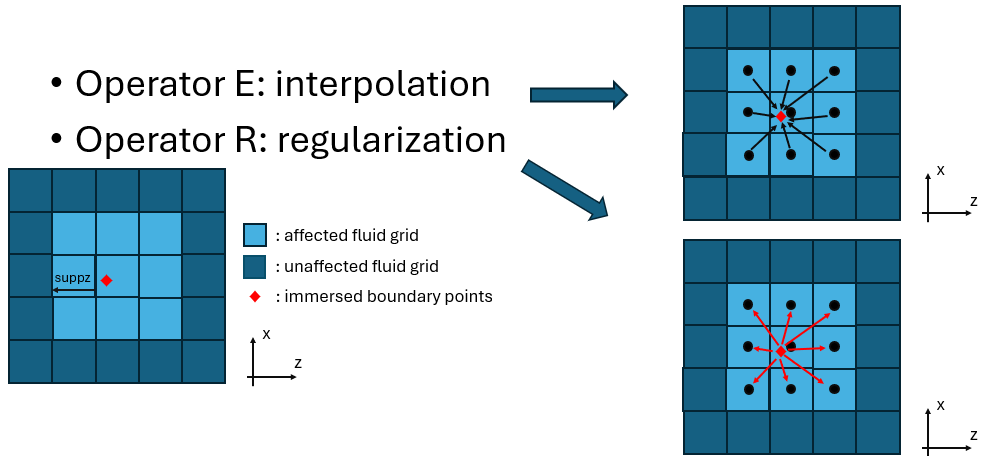
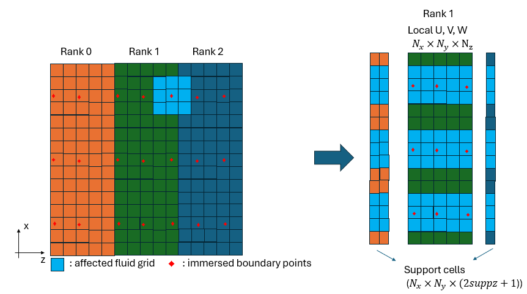
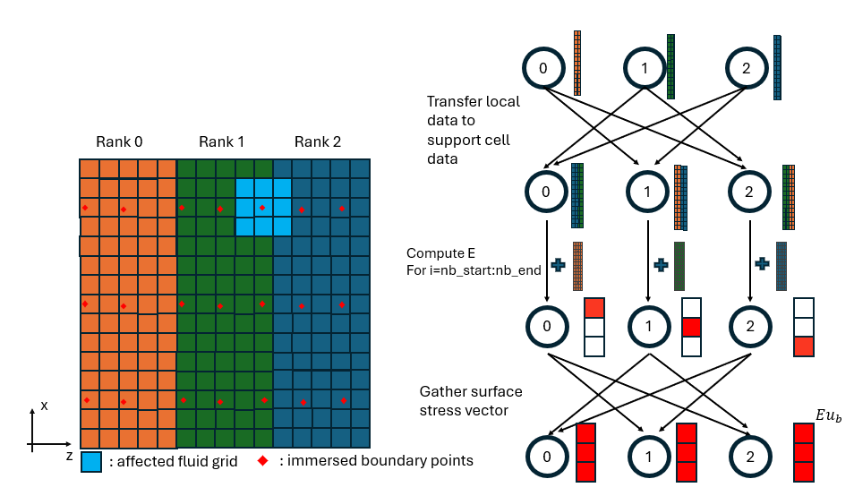
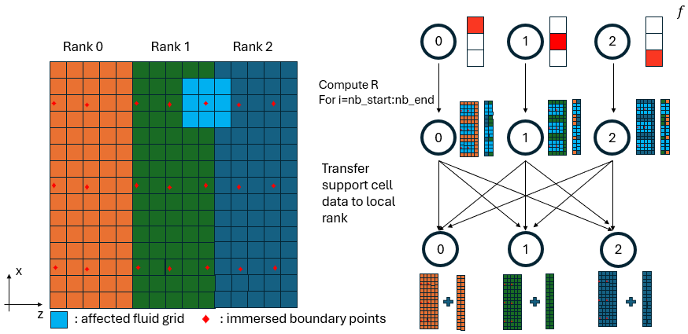

Interpolation and Regularization Operators with MPI

Figure 1: Schematic of interpolation and regularization operator.
In the Immersed Boundary Projection Method (IBPM), two operators link the fluid grid and the immersed boundary (IB) points:
- Operator E (interpolation,
regT): interpolates fluid velocity from the Eulerian grid onto the Lagrangian IB points - Operator R (regularization,
regu/regv/regw): spreads the IB force from the Lagrangian IB points back onto the Eulerian grid
Each IB point interacts with a local stencil of fluid grid points within a
support radius suppz in the spanwise direction (and equivalently in x
and y). The affected fluid cells are illustrated in the schematics above.
The Support Cell Concept

Figure 2: Schematic of support cell.Because the domain is partitioned along z, an IB point near a rank boundary may require fluid data that lives on a neighboring rank. To handle this without repeated point-to-point communication during the operator evaluation, each rank maintains a support cell buffer, called support cell, a local copy of the fluid planes from neighboring ranks that fall within the stencil of its assigned IB points.
The support cell buffer for each variable has size:
N_x × N_y × (2·suppz + 1)
where 2·suppz + 1 is the full stencil width in z. The subroutines
interior_planes_update_support and support_update_interior_planes
handle the MPI communication to keep these buffers synchronized before and
after the operator evaluations.
IB Point Distribution Across Ranks
Each rank is responsible for a contiguous subset of the nb total IB points,
defined by the range [nb_start, nb_end]. The local number of IB points is:
local_size_nb = nb_end - nb_start + 1
Operator E — Interpolation (regT)

Figure 2: Flow chart of interpolation operator.The interpolation operator evaluates the fluid velocity at each IB point as a weighted sum over the surrounding stencil points:
Execution Steps
Step 1 — Populate support cells:
Call interior_planes_update_support(U_, U_supp, 1)
Call interior_planes_update_support(V_, V_supp, 2)
Call interior_planes_update_support(W_, W_supp, 3)
Fluid planes from neighboring ranks that fall within the stencil are copied
into the local support buffers U_supp, V_supp, W_supp.
Step 2 — Local interpolation (local_regT):
For each IB point j in [nb_start, nb_end] and each stencil point i:
! If the stencil point lives on myid → read from local array
Eu_(j) = Eu_(j) + u_weights(i,j) * U_(xi, yi, z_local)
! If the stencil point lives on a neighbor → read from support buffer
Eu_(j) = Eu_(j) + u_weights(i,j) * U_supp_(xi, yi, z_supp)
The rank that owns a given stencil point is stored in u_proc(i,j) (and
equivalently v_proc, w_proc).
Step 3 — Global assembly (MPI_Allgatherv):
Each rank has computed the interpolated value only for its assigned IB points. A global gather assembles the full result across all ranks, separately for each velocity component:
! Gather u-component: indices 1 .. nb
Call MPI_Allgatherv(regT_buffer(nb_start : nb_end), ...)
! Gather v-component: indices nb+1 .. 2*nb
Call MPI_Allgatherv(regT_buffer(nb+nb_start : nb+nb_end), ...)
! Gather w-component: indices 2*nb+1 .. 3*nb
Call MPI_Allgatherv(regT_buffer(2*nb+nb_start: 2*nb+nb_end), ...)
After this step every rank holds the complete interpolated vector Eu_ of
length 3·nb.
Operator R — Regularization (regu / regv / regw)

Figure 2: Flow chart of regularization operator.The regularization operator spreads the IB body force back onto the fluid grid as a weighted sum scaled by the cell volume:
Execution Steps
Step 1 — Local regularization (local_reg):
For each IB point j in [nb_start, nb_end] and each stencil point i,
the body force is accumulated onto the fluid grid:
! If the stencil point lives on myid → write directly into F
F(xi, yi, z_local) = F(xi, yi, z_local) + weight * factor * sb(j) * f_(j)
! If the stencil point lives on a neighbor → write into support buffer
F_supp(xi, yi, z_supp) = F_supp(xi, yi, z_supp) + weight * factor * sb(j) * f_(j)
where factor = 1 / (dx · dy_min · dz) and sb(j) is the arc-length
weight of IB point j.
Step 2 — Reduce support buffer back to interior planes:
Call support_update_interior_planes(F, F_supp, id)
Contributions that were accumulated in the support buffer (targeting neighboring ranks) are sent back and added into those ranks' interior arrays, completing the scatter operation.
Summary
| Step | Operator E (regT) |
Operator R (regu/regv/regw) |
|---|---|---|
| Pre-communication | interior_planes_update_support |
— |
| Local computation | local_regT |
local_reg |
| Post-communication | MPI_Allgatherv |
support_update_interior_planes |